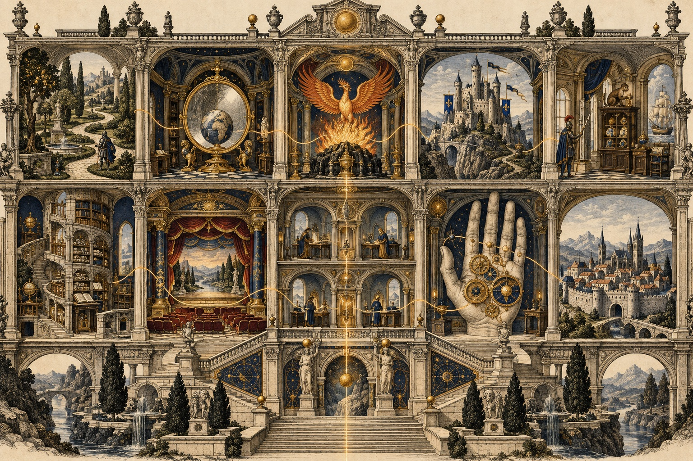

The Memory Arts in Renaissance England
In Shakespeare's England people trained their memories with imagined buildings, strange pictures and even their own hands. These are my notes on the ten English guides in Part I of one Cambridge anthology of old sources. Tap a room to open the notes.

1I.1 · The Pastime of Pleasure2I.2 · The Mirror of the World3I.3 · The Phoenix4I.4 · The Castle of Memory5I.5 · The Jewel House of Art and Nature6I.6 · A Help to Memory and Discourse7I.7 · The Art of Memory8I.8 · The Art of Memory Made Plain9I.9 · Art of Memory10I.10 · The Art of Memorythe ten, in order
- I.1The Pastime of PleasureStephen Hawes, 1509
- I.2The Mirror of the WorldLaurence Andrewe, 1527
- I.3The PhoenixPeter of Ravenna, 1548
- I.4The Castle of MemoryGuglielmo Gratarolo, 1562
- I.5The Jewel House of Art and NatureHugh Plat, 1594
- I.6A Help to Memory and DiscourseWilliam Basse, 1620
- I.7The Art of MemoryJohn Willis, 1621, 1661
- I.8The Art of Memory Made PlainHenry Herdson, 1651
- I.9Art of MemoryRichard Saunders, 1671
- I.10The Art of MemoryMarius D'Assigny, 1697
Before the ten books
The art of memory began as a speaker's private trick: walk through a building you know and leave a vivid picture in each place, then walk it again to get your speech back in order.
In the Middle Ages monks used it to compose and to meditate. Aquinas and his teacher defended it as part of prudence: pick striking images, put things in order, care about them, and think about them often.
A second tradition came from Ramon Llull: letters and wheels that combine ideas to sort out all knowledge. That strand fed the Renaissance writers on magic and logic, and later Giordano Bruno.
England printed very little on the art before the 1500s. Only two foreign treatises were translated (the Phoenix and the Castle of Memory); the rest were written in English, mostly for ordinary readers, and they played down magic.
The editors count 217 printed works that use the phrase "art of memory" between 1500 and 1700. The phrase spreads like a catchphrase and peaks in the 1640s and 1650s.